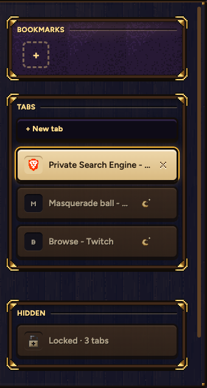
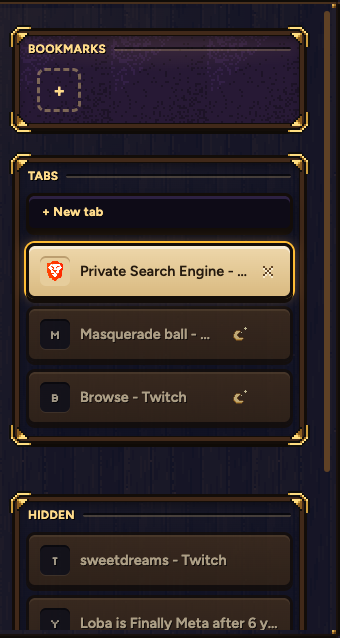

SHEET 87 - THE PRIVATE WINDOW
Samara's real top bar, at night. The mask sits before the shield at about the shield's size. Nothing you do here is kept in Samara, pop-ups and ads are blocked hard, and your hidden tabs wait, locked, in your tab list.
1 · THE PRIVATE WINDOW
2 · YOUR TAB LIST: THE HIDDEN TABS, LOCKED
A third panel under your tabs. Only private windows have it.


3 · CLICK IT: YOUR PIN, ON SCREEN
4 · OPEN: THE HIDDEN TABS, RIGHT THERE IN THE LIST

- The lights fill gold as you type. As many lights as your PIN is long, and it opens on the last one.
- A wrong PIN: the lights shake once and empty, the same shake as Bitwarden's.
- Right PIN: the box drops away, the padlock's shackle lifts, and the hidden tabs slide into the panel.
- It locks again when the private window closes. Esc or a click outside closes the box.
5 · THE MASK, 8 TIMES BIGGER